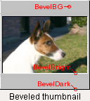

General Information
GFXIndex is a tool to manage your picture collection by creating thumbnails (small representation of the original picture), scale down the pictures to screen size (called "bigs" in GFXIndex lingo) and HTML-indexes. The human brain can very quickly find a photo by looking at a collage made up miniatures a photo collection. This is why this type of software is very popular in these days when digital photography is in the grasp of many families. When the photo collection builds up one needs to have a way of organizing it. Also this "gallery"-format of thumbnails is a popular way of publishing images on the web as you quickly download the thumbnails and then select the image you want to see the full image. Since GFXIndex first release a lot of other gallery indexers have been released and they all have their unique advantages. Some are online based software with database backend and upload capabilities, others are, like GFXIndex, offline based where you prepare your indexes and then upload them. Ofcause if you have shell-access to your site you could ofcause run it on the server, still, by default GFXIndex generates static HTML galleries. The process of creating an album is usually done by changing to the directory where you have your images and runninggfxindex. This generates the thumbnails, puts them into the directory thumbnails (can be configured) and writes the indexes into the current working directory. Thus creating a directory structure like:
.
|-- index.html First page. next one is called index2.html and so on
|-- p5180354.jpg Original image, untouched (2048x1536)
|-- p5180359.jpg
|-- p5180363.jpg
|-- p5180367.jpg
`-- thumbnails
|-- gfxindex.xml Cache file, just written for now, can be used by PHP et al
|-- p5180354.jpg Thumbnail (128x96)
|-- p5180354.jpg.html Page with original image, this is where you
|-- p5180359.jpg get when you click a thumbnail
|-- p5180359.jpg.html
|-- p5180363.jpg
|-- p5180363.jpg.html
|-- p5180367.jpg
`-- p5180367.jpg.html
In previous versions there used to be an indexer made in PHP, but since the format of the cache file has changed I haven't updated it to handle this so until it is updated you will have to stick with static HTML or help me write one.
A note. It's GFXIndex and not GFXindex, gfxindex, GFXINDEX, gfX1nD3x or anything else. Sorry if I've typed it any different before.
Status
The official web site is:http://fredrik.rambris.com/gfxindex/ The current project maintainer is Fredrik Rambris <fredrik@rambris.com>.
Requirements
- popt
- jpeglib (optional but gfxindex is useless w/o it)
- libpng (optional)
- libexif (optional)
- expat (optional, used for reading album files)
Installation
Build on a GNU system
Nothing fancy here, folks.Edit src/defaults.h if you want to change some of the compiled in defaults.
$ ./configure $ make # make install
Install on Windows
Just run the installer.Usage
The most common usage is to run GFXIndex within the directory you wish to make HTML indexes. On Windows you can right click on a folder and select Create album with GFXIndex. It uses the settings from gfxindex.ini in the installation folder. Arguments can be entered on the commandline or be read in from a runcontrol file. The path of this file caused some confusion in past versions. Nowdays the config is read once and the path has to be specified in command line. The options are pretty self expanatory but I'll go ahead and explain them anyway. For the commandline options seegfxindex --help. This is the format of a rcfile. Although in pretty much all the cases you can use the same option names on the command line as in rcfiles.
A rcfile is a regular text file. You may comment out the rest of the line with //. Each line consists of an option and a value separated by a '='. The formating is pretty liberal. After cutting the line by the first '=', whitespaces are stripped off. All chars are allowed except newline or carrige return.
The name of the options are not case sensitive.
There are three types of values: String, integer and boolean.
Boolean is true or false. Anything beginning with 0, f or n is false and anything beginning with 1, t or y is true.
A string is a sequence of alphanumeric characters much like the ones you're reading right now. In the rcfile you don't enclose them in quotes as you do on the command line.
An integer is simply a number
An integer list is a comma-separated list of integers (3,7,11,13,17)
An example:
// A nice configfile Title = My vacation on Mars Recursive = Yes Quality = 90 // JPEG quality of thumbs // EOF - Killroy was hereAvailable options are:
- DIR (STRING)
- Directory to start with. Default is the current directory.
- OUTDIR (STRING)
- Directory to put all created pictures and documents in. Defaults to the current directory.
- THUMBDIR (STRING)
- Name of directory where the thumbnails go. Defaults to thumbnails
- QUIET (BOOL)
- Print progress information or not. Is a shortcut for VERBOSE=0 or 1
- VERBOSE (INT)
- Specify the level of verbosity. 0 - Quiet, 1 - Normal progress, 2 - Lots of information
- TITLE (STRING)
- Title of the album.
- CAPTION (STRING)
- A description of the contents shown at the bottom.
- OVERWRITE (BOOL)
- Overwrite indexes and thumbnails.
- REMAKETHUMBS (BOOL)
- Force creation of thumbnails
- REMAKEBIGS (BOOL)
- Force creation of "bigs"
- RECURSIVE (BOOL)
- Dive into each directory.
- THUMBS (BOOL)
- Create thumbnails or not
 PAD (BOOL)
PAD (BOOL)- Pad all thumbnails to equal size.
- SOFTPAD (BOOL)
- An alternative to padding the thumbnails with extra pixels, taking up more space on disk, is to set HSPACE and VSPACE properties accordingly in the IMG tags instead. Not 100% accurate but good enough for most.
- THUMBWIDTH & THUMBHEIGHT (INTEGER)
- Sets the width and height of the thumbnails. The image is scaled proportionally so the final thumbnail may not have the size you set unless it's padded (see pad)
- WIDTHS (INTEGER LIST)
- A comma-separated list of integers describing what size to scale the bigs (and thus activating this feature). Eg. 1024,800,640 will provide downsized versions of the original that fits squares of 1024x1024, 800x800 and 640x640.
- DEFWIDTH (INTEGER)
- The default width to use when linking from thumbnail and title. Ie. if you have 1024,800,640 in WIDTHS and set DEFWIDTH to 800 it's the 800 picture that will be shown when clicking on the thumbnail.
- COPY (BOOL)
- Whether the original image should be copied to the OUTDIR or not. This can be used if you have large originals that you don't want to share but rather let the viewer have smaller images (created with WIDTHS). Or if you DO want to share the original when using a separate OUTDIR.
- QUALITY (INTEGER)
- Sets the JPEG quality for the thumbnails. 0 means poor and 100 means best quality and vice versa with the compression ratio / file size. A value between 50-80 makes sense with thumbnails.
- BIGQUALITY (INTEGER)
- The JPEG quality used when saving bigs. A value between 75-95 is probably ok.
- THUMBBGCOLOR (STRING)
- Sets the color of the background plate when rendering thumbnails. Only visible when rendering transparent images and when padding is active.
- THUMBBACKGROUND (STRING) EXPERIMENTAL
- Filename of an image to be loaded,scaled and finally pasted on the background plate instead of a single color.
- THUMBALPHA (STRING) EXPERIMENTAL
- Filename of an image containing the alpha-channel to apply to the image when creating a thumbnail. See the figure for an example. White pixels mean full opacity and black means full transparency. Everything in between ofcause control semi-transparency
- THUMBBEVEL (BOOL)
- Draws beveled frames around the image and the thumb. Selecting this activates padding.
- BEVELBG (STRING)
- Sets the color of the frame around the image when beveled
- BEVELBRIGHT & BEVELDARK (STRING)
- Sets the colors of the bright and dark edges that make up the bevel effect. It's a good idea to set them to a blend of BEVELBG.
- SCALE (INTEGER)
- Method used when rescaling. Valid values are 1 - Nearest pixel (fast but ugly and should not be used), 2 - Bicubic (slow but smooth).
A note here. When possible GFXIndex try to prescale the image when loading. This can only be done on JPEG images and this is acheived before the final decoding is done and is very fast. This is the reason why thumbnailing is so fast compared to earlier versions of GFXIndex. - INDEXES (BOOL)
- If HTML-indexes are to be created or not. One reason for not creating them is if you, for instance, use a PHP script to create the indexes on the fly (poor fly...).
- TITLES (BOOL)
- Whether or not to show the filenames or titles under the thumbnails. Most digital cameras generate non-interesting filenames and therefore it doesn't make much sense showing them.
- EXTENSIONS (BOOL)
- Whether or not to show extensions of the filenames. If you set this to FALSE and a file is called Mom.jpg the title will be Mom
- CAPTIONS (BOOL)
- Show captions or not. See WRITEALBUM further down for an explanation of how to get captions.
- NUMLINK (BOOL)
- Show numbered links to each page. [ 1 | 2 | 3 | 4 ]
- NAVTHUMBS (INTEGER)
- Use thumbnails for Prev and Next when viewing an image. Supply a percentage of the original thumbnail size it will have.
100 sets the sizes of these thumbnails to the same as the other thumbnails, 50 half, etc.
Set this to 0 and it will turn this feature off (default).
Note. This used to be called THUMBSCALE - NUMX & NUMY (INTEGER)
- Number of thumbnails per row and rows per page.
An example, if I may:NUMX = 16 // Sixteen thumbnails per row NUMY = 8 // Eight rows per page
- BODYARGS (STRING)
- Arguments to put into the <BODY>-tag. Try this:
BODYARGS = BGCOLOR="#000000" TEXT="#ffffff" LINK="#ff8800" VLINK="#ff8800" ALINK="#ffff00"
- TABLEARGS (STRING)
- Arguments for the <TABLE>-tag.
- CELLARGS (STRING)
- Arguments for the <TD>-tag
- CSS (STRING)
- Path to a Cascading Style Sheet relative to the starting directory of output directory if they are used. Another good guide to CSS is richinstyle.com.
- CSSFILE (STRING)
- Path to a CSS to be embedded into the HTML files with a <STYLE>-tag.
- PARENTDOC (STRING)
- The link used when referring to the parent document. Only makes sense to use without recursing enabled. For instance, if you are on a IIS web server (shame on you) and want to link to ../default.asp instead of ../index.html you should use this option.
- LEFT, SPACE, DIVIDER, RIGHT, PREV, NEXT, INDEX and PARENT (STRING)
- Strings that make up the navigation bar.
Set one of these to nothing (empty quotes "") and it will not be printed. A note about INDEX. The individual images also link back to the index.[ Prev | Parent | Index | Next ] LEFT SPACE PREV SPACE DIVIDER SPACE PARENT SPACE DIVIDER SPACE INDEX SPACE DIVIDER SPACE NEXT SPACE RIGHT - USETITLES (BOOL)
- Use the titles of the previous and next images instead of 'Prev' or 'Next'
- EXIF (BOOL)
- Show EXIF information if it's available
- WRITEALBUM (BOOL)
- Create a template album.xml in the thumbnail directory for you to fill in with titles, captions and rotation.
This album.xml is read in when creating an index and is used to set the title of each image and album, set a caption for each image and album and also for setting a rotation to each image. If there exist Orientation information in the EXIF header it will be used. It can be overridden with the ROTATE-property in album.xml. To override and disable rotation set the ROTATE property to 360. - INDEXTITLE, INDEXHEADER, INDEXFOOTER, PICTURETITLE, PICTUREHEADER, PICTUREFOOTER (STRING)
- Format of the title (page title), header (above the thumbnails/pictures) and footer (below the thumbnails/pictures). It uses a printf-style syntax where % (percent) followed by a letter is substituted by a string or number.
%f Current filename %F Current filename without extension %y Todays year %m Todays month %d Todays day of month %Y File's year %M File's month %D File's day of month %p Page number %P Number of pages %t Album title %T Picture title %w Picture width %h Picture height %e Date from EXIF header formated by libexif. %% % (a percent sign) - INDEXHEADERFILE, INDEXFOOTERFILE, PICTUREHEADERFILE, PICTUREFOOTERFILE (STRING)
- Embed the contents of the file at the corresponding place in the HTML-documents. No printf-substitution is made.
- FULLDOC (BOOL)
- Whether or not to write full HTML document or just the contents between <BODY> and </BODY>
- FLAT (BOOL)
- Normally thumnails are put into a subdirectory. By settings FLAT to false thumbnails will be suffixed with _tn rather than put into a subdirectory.
ALBUM.XML
By runninggfxindex --writealbum GFXIndex will write a template album.xml to the picture directory. This file is read in when indexing that directory and is used to add options to album and pictures when thumbnailing. The syntax is very specific and GFXIndex will abort if it detects an error in this file.
You may put <TITLE> and <CAPTION> tags after the <ALBUM> tag to set the album title and caption (and thus not needing the --caption or --title options).
You may add ROTATE="degree" to the <PICTURE> tag with the value of0 - Don't rotate or use the rotation from EXIF data.
90, 180, 270 - Rotate the selected amount of degrees. 360 - Never rotate. Effectly ignoring EXIF rotate tags. You may also add SKIP="true" to the <PICTURE> tag if you want to exclude a picture from the album. Here's an example
<?xml version="1.0" encoding="ISO-8859-1"?> <Album> <Title>My trip to Moon</Title> <Caption>In july 1969 I went on a trip to the moon visiting some historical sites</Caption> <Picture path="p6170062.jpg" rotate="90"> <Title>Sea of tranquility</Title> <Caption>Me and my buddy Buz in front of the LM</Caption> </Picture> <Picture path="p6170064.jpeg" skip="true"> <Title>LM interior</Title> <Caption>The interior of the lunar module</Caption> </Picture> </Album>
Future
- Bugs... "a dead bug is a good bug"
- Your sumbissions will be implemented if they are within my vision and/or if you're persuasive enough.
Updated for 2.0pre3. 2004-Jul-19